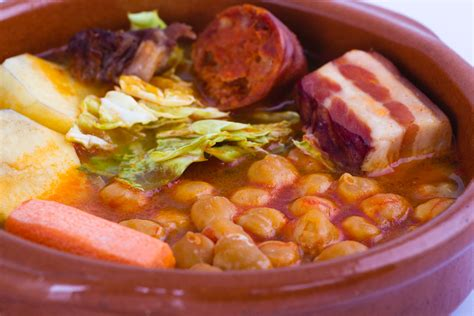
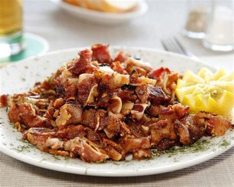
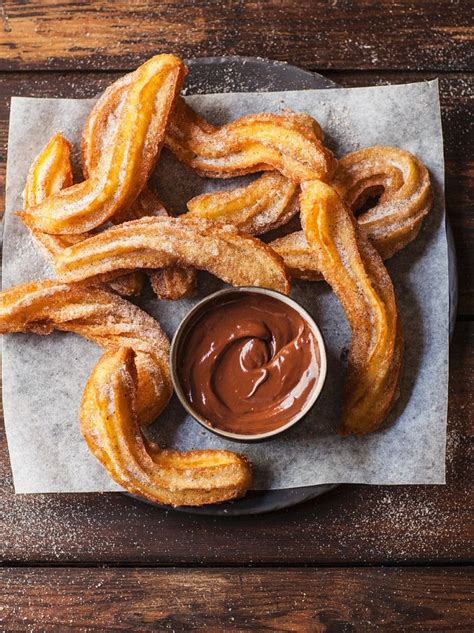
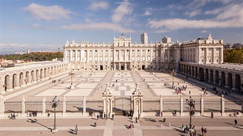
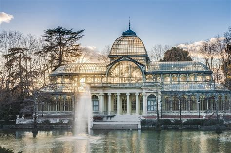
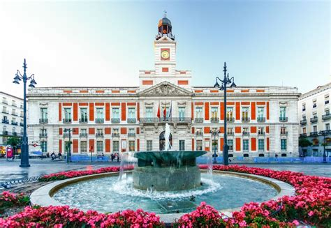

Madrid
Descripción
Murcia es una región en el sureste de España conocida por su clima cálido y su rica agricultura. La ciudad de Murcia es la capital y tiene un importante patrimonio cultural y religioso.
Datos Rápidos
- Capital: Madrid
- Idioma Regional: Español
- Población: ~6.7 millones (área metropolitana)
- Famosa por: Museos, parques, vida nocturna
- Dato Curioso: ¡Madrid tiene uno de los museos de arte más grandes del mundo, el Museo del Prado!
Platos Populares
Cocido Madrileño

Callos a la Madrileña
Oreja a la Plancha

Churros con Chocolate

Lugares Famosos
Palacio Real

Parque del Retiro

Museo del Prado
Puerta del Sol

Gran Vía

Mejor época para visitar
La mejor época para visitar Madrid es en primavera (marzo–mayo) y otoño (septiembre–noviembre) por su clima agradable.
Símbolos Regionales
- Bandera:
- Escudo: